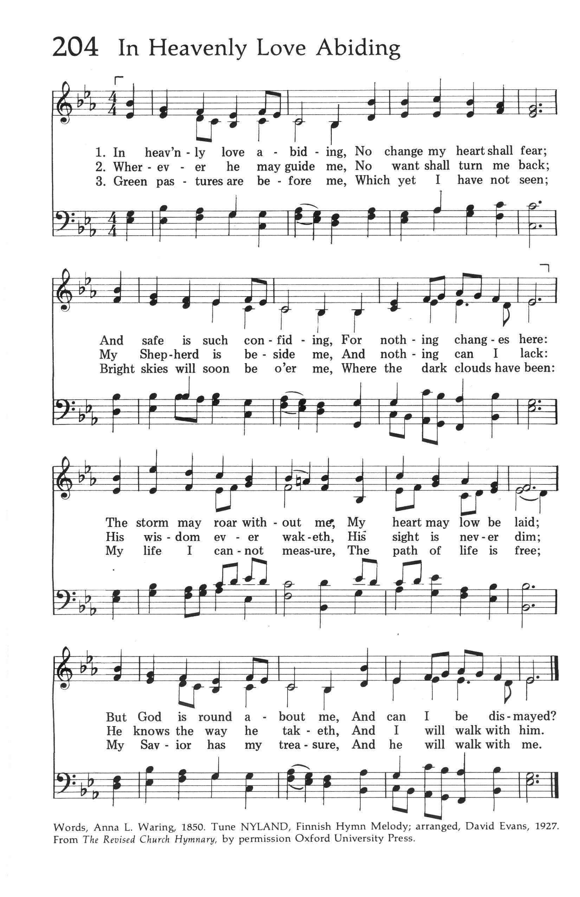

|
|
【謝主賜小孩】 |
|
|
|
|
 |
|
|
|
|

- Tune: Nyland or Lord, for the gift of children. https://youtu.be/QxUJWRz5FZ8
| Text: | Lord, for the Gift of Children |
| Author: | Duane Blakley |
| Tune: | NYLAND |
| Arranger: | David Evans |
508. Lord, for the Gift of Children
| Text Information | |
|---|---|
| First Line: | Lord, for the gift of children |
| Title: | Lord, for the Gift of Children |
| Author: | Duane Blakley |
| Meter: | 7.6.7.6.D |
| Language: | English |
| Publication Date: | 1991 |
| Scripture: | |
| Copyright: | 1991 Broadman Press |
| Tune Information | |
|---|---|
| Name: | NYLAND |
| Arranger: | David Evans |
| Meter: | 7.6.7.6.D |
| Key: | E♭ Major |
| Source: | Revised Church Hymnary, 1927; Finnish Hymn Melody |
| Copyright: | Oxford University Press |
| Short Name: | Duane Blakley |
| Full Name: | Blakley, Duane, 1937- |
| Birth Year: | 1937 |
Notes
NYLAND, named for a province in Finland, is a folk melody from Kuortane, South Ostrobothnia, Finland. In fact, the tune is also known as KUORTANE. NYLAND was first published with a hymn text in an appendix to the 1909 edition of the Finnish Suomen Evankelis Luterilaisen Kirken Koraalikirja. It gained popularity in the English-speaking world after David Evans's use of it in the British Church Hymnary of 1927 as a setting for Anna 1. Waring's text "In Heavenly Love Abiding." Evans (b. Resolven, Glamorganshire, Wales, 1874; d. Rosllannerchrugog, Denbighshire, Wales, 1948) edited that hymnal, which was the source of a number of his harmonizations, including this one.
David Evans was an important leader in Welsh church music. Educated at Arnold College, Swansea, and at University College, Cardiff, he received a doctorate in music from Oxford University. His longest professional post was as professor of music at University College in Cardiff (1903-1939), where he organized a large music department. He was also a well-known and respected judge at Welsh hymn-singing festivals and a composer of many orchestral and choral works, anthems, service music, and hymn tunes.
NYLAND is a modified rounded bar-form tune (AA'BA') with a wide-ranging melodic contour and a fine harmonization for part singing. It needs good singers for the harmony and requires organ phrasing that produces four long lines.
--Psalter Hymnal Handbook